pt cm
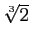
.
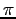
(ou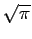
en vertu des exercices 4.2.11 et 4.2.12).
Supposons donc qu'il soit possible de construire un point dont
une des coordonnées est
. En vertu de l'exercice 4.2.12,
il est possible de construire un point dont une des
coordonnées est
. Soit  un cercle de rayon
un cercle de rayon
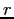
. En vertu de l'exercice 4.2.11, on peut construire un segment de longueur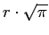
. Par perpendiculaire successives, on peut construire un carré dont les côtés mesurent . L'aire de ce carré est alors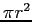
et on a réalisé la quadrature du cercle.
Supposons donc qu'il soit possible de construire un point dont
une des coordonnées est
. Soit  un cube de côté
.
En vertu de l'exercice 4.2.11, on peut construire un segment
de longueur
un cube de côté
.
En vertu de l'exercice 4.2.11, on peut construire un segment
de longueur
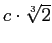
. Par perpendiculaire successives, on peut construire un cube dont les côtés mesurent . Le volume de ce cube est alors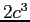
et on a réalisé la duplication du cube.
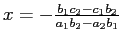
et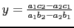
qui sont des points à coordonnées rationnelles.
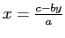
. Si on remplace cette valeur de
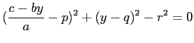
qui est équivalent après développement à
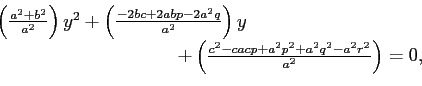
un polynôme en  . Posons
. Posons
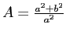
,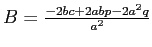
et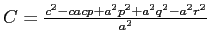
. Les racines de ce polynôme sont alors de la forme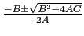
. Si on pose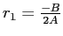
,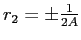
et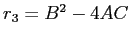
, alors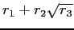
.
Il reste à vérifier que  est aussi de cette forme. En
remplaçant la valeur de
est aussi de cette forme. En
remplaçant la valeur de  obtenue dans la première équation, on
trouve
obtenue dans la première équation, on
trouve
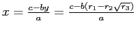
qui après réordonnancement s'écrit sous la forme souhaitée.
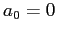
,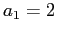
,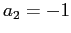
,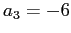
,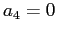
,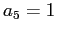
et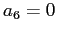
.
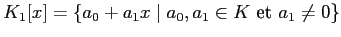
et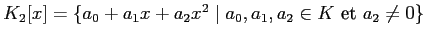
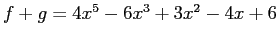
,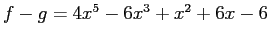
et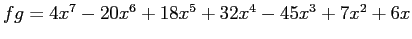
.
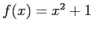
et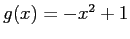
.
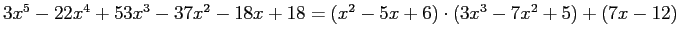
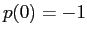
,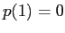
,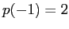
et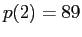
.
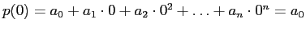
.
Deuxièmement, supposons d'abord que le reste de la division de  par
par  est 0
. Alors,
est 0
. Alors,
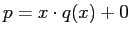
d'où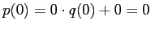
. Réciproquement, supposons que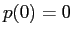
. D'après la première partie, on a que . Donc,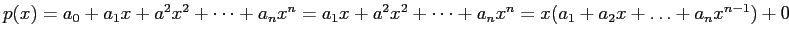
. Donc, le reste de la division de
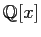
et dans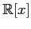
,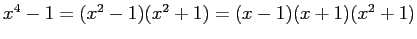
admet comme racines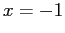
. Dans , admet comme racines et .
C'est la définition de racine.
Supposons que
. En vertu du lemme
4.4.20, le reste de la division de  par
est égal à
et en vertu de notre hypothèse est donc nul.
par
est égal à
et en vertu de notre hypothèse est donc nul.
Supposons que le reste de la division de  par
est nul. On peut écrire
avec
. Il est alors clair que
.
par
est nul. On peut écrire
avec
. Il est alors clair que
.
Il suffit de montrer que
. Or, si
divise  , c'est que
avec
. Ainsi,
.
, c'est que
avec
. Ainsi,
.
Le pgcd de  et
et  est donc
qui est un polynôme de
coefficient directeur 1. Trouvons maintenant
et
est donc
qui est un polynôme de
coefficient directeur 1. Trouvons maintenant
et  .
.
Donc, et .
Supposons au contraire que est le carré d'un nombre rationnel. Alors, est un nombre rationnel. Ainsi, et sont deux nombres rationnels qui sont racines du polynôme ce qui veut dire que ce dernier est réductible sur .
Supposons au contraire que est réductible dans . Alors, il existe des constantes telles que . Cela entraîne que d'où on tire , et . Alors, est le carré d'un nombre rationnel.
On a
ce qui entraîne
que
est pair et donc que  l'est. De même,
. Comme
l'est. De même,
. Comme
 est pair, on peut écrire
pour un certain
. Donc,
. Il s'en suit que
est pair.
est pair, on peut écrire
pour un certain
. Donc,
. Il s'en suit que
est pair.
Comme  et
sont tous deux pairs, on a une contradiction au
fait que
et
sont tous deux pairs, on a une contradiction au
fait que  .
.
De plus, on sait que dans , . Pour le dernier facteur de ce produit, le discriminant est qui est négatif. Ce facteur n'est donc pas réductible dans et a fortiori dans . Comme toute racine dans doit aussi être une racine dans , on en déduit que est irréductible dans .